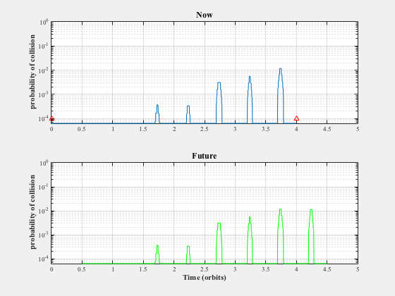
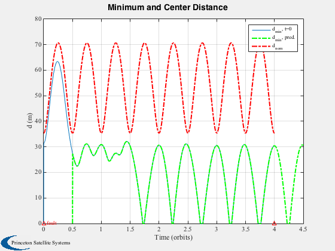
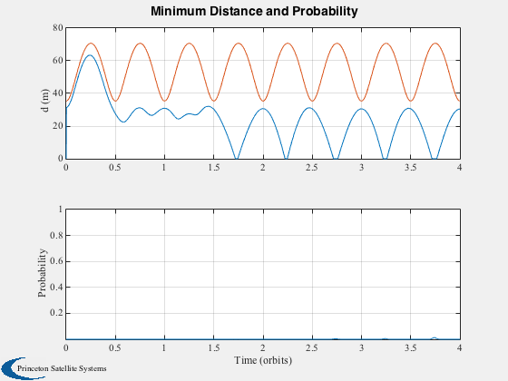
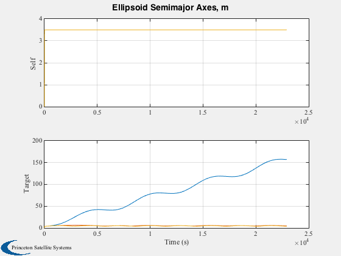
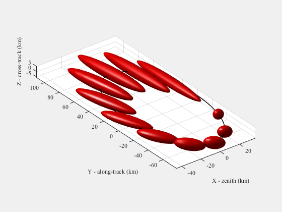

Simulation for testing the collision monitoring algorithms.
Computes the probability of collision between the two spacecraft for a fixed prediction window at each step. Also outputs the probability of collision for "now". Also simulates a fault in one of the spacecrafts in Projected Line formation (so no measurements are received for a fraction of an orbit) and plots the actual ("now") and predicted probability of collision over 2 orbits.
This demo does not include maneuvers for any of the spacecraft.
Since version 7. ------------------------------------------------------------------------ See also Constant, Plot2D, Plot3D, TimeLabl, Mag, UnwrapPhase, CollisionMonitor, Plot3DEllipsoids, ProjLine, RotateState, Geometry_Structure, HillsEqns, FFEccLawdensEqns, Goals2Hills, OrbRate, M2Nu, Period ------------------------------------------------------------------------
Contents
%------------------------------------------------------------------------------- % Copyright (c) 2004-2005 Princeton Satellite Systems, Inc. % All rights reserved. %------------------------------------------------------------------------------- %%%%%%%%%%%%%%%%%%%%%%%%%%%%%%%%%%%%%%%%% %%%%%% User Parameters %%%%%%%%%%%%%%%%%% % Relative orbit selection % 1: projected line with velocity set to cause a collision % 2: Hills ellipse (Reference: Campbell IEE CST, 2005) relOrbit = 2; % Discrete or continuous propagation method discreteProp = 0; % Relative measurements (from monitoring spacecraft) relativeMeas = 1; % Time window for prediction predictTime = 0.5; % number of orbits nSamples = 2; % Uncertainty in measurements of target, one sigma positionError = 0.1; % m velocityError = 0.0005; % m/s % Reference orbit eccentricity eRef = 1e-6; % Relative orbit characteristic distance (km) dR = 0.05; % Measurement fault times (orbits) faultStart = 0; faultEnd = 2; % Flag to plot the Hills orbit plotFlag = 0; % Index of sample times to save nStore = 1; %%%%%% End of Parameters %%%%%%%%%%%%%%%% %%%%%%%%%%%%%%%%%%%%%%%%%%%%%%%%%%%%%%%%%
Constants
%-------------------------- deg2rad = pi/180.0; % radians to degrees km2m = 1.0e03;
Algorithm Initialization
%-------------------------- % Orbit parameters d.hRef = 550.0; % km - altitude of the reference orbit d.eRef = eRef; % eccentricity d.dR = dR; % km - distance between spacecrafts d.initBounds = [positionError*[1 1 1] velocityError*[1 1 1]]; % 1 sig error in measurement (0.1m and 0.5mm/s) % General d.nSC = 2; % the number of S/C is a constant, two real S/C % plus a "virtual" S/C at the formation center d.predictTime = predictTime*Period(Constant('earth radius mean')+d.hRef); % amount of time to predict for d.nSampleTimes = nSamples; % number of sample times - must be at least 2 d.scalev = 4; % sigma for GPS measurement noise d.discrete = discreteProp; % Spacecraft physical parameters d.mSC = 150; % kg - spacecraft mass d.lenSC = 7.0; % m - spacecraft length d.diaSC = 4.0; % m - spacecraft diameter d.volSC = 4/3*pi*((d.lenSC/2)^3); % Assume sphere d.Cd = 2.2; % drag coefficient d.Cr = 1; % reflectivity of s/c: 0.0 for translucent; % 1.0 for black-body; 2.0 for flat mirror
Simulation Initialization
%--------------------------- nPtsPerOrbit = 500; % number of points at which to compute orbit data jD = 2451245; % epoch in the Julian date system aRef = Constant('earth radius mean') + d.hRef; incRef = 85*deg2rad; % inclination of reference orbit orbPeriod = Period(aRef); % Orbit period (sec) wn = OrbRate(aRef);
Generate SC positions
%---------------------- switch relOrbit case 1 % Projected Line with impending collision % Keplerian element set for each spacecraft orbit ([a,i,W,w,e,M]) [elSet,rH0,vH0] = ProjLine( aRef, incRef, 2, d.dR ); % Setting up a collision between the 2 satellites vH0(2,1) = d.dR/orbPeriod/3; % This velocity with ProjLine causes a collision in one orbit rH0 = km2m*rH0; vH0 = km2m*vH0; xH0_1 = [rH0(:,1);vH0(:,1)]; xH0_2 = [rH0(:,2);vH0(:,2)]; % number of orbits nOrbits = 2; iPlot = [1 2 3]; case 2 % Projected circle state g = Geometry_Structure; phi = [45 135]*deg2rad; g.aE = d.dR; g.zLan = 0.0125*0; g.zInc = 0.0125*0; g1 = RotateState(g,phi(1)); xH0_1 = km2m*Goals2Hills(wn,0,g1); g2 = RotateState(g,phi(2)); xH0_2 = km2m*Goals2Hills(wn,0,g2); yAxis = [0 2*pi 0 80]; % number of orbits nOrbits = 4; faultEnd = nOrbits; iPlot = [3 2 1]; end % Time nPts = nPtsPerOrbit * nOrbits; duration = nOrbits * orbPeriod; MET = linspace(0, duration, nPts); dTSim = MET(2)-MET(1); tFaultStart = round(orbPeriod * faultStart); tFaultEnd = round(orbPeriod * faultEnd); % Propagate in Hills frame xHill = []; nu0 = 0; nuF = UnwrapPhase(M2Nu(eRef,wn*MET)+nu0); xHill(:,:,1) = FFEccLawdensEqns( xH0_1, nu0, nuF, eRef, wn ); xHill(:,:,2) = FFEccLawdensEqns( xH0_2, nu0, nuF, eRef, wn ); if plotFlag % spacecraft orbits: h = Plot3D(xHill(iPlot,:,1),'z','y','x','Spacecraft Hills Orbits'); hold on; plot3( xHill(iPlot(1),1,1),xHill(iPlot(2),1,1),xHill(iPlot(3),1,1),'b.','markersize',20); plot3( xHill(iPlot(1),:,2),xHill(iPlot(2),:,2),xHill(iPlot(3),:,2),'r'); plot3( xHill(iPlot(1),1,2),xHill(iPlot(2),1,2),xHill(iPlot(3),1,2),'r.','markersize',20); axis equal; Plot2D( nuF, Mag(xHill(1:3,:,2)-xHill(1:3,:,1)) ); if exist('yAxis') axis(yAxis); end return; end % scales time and generates labels for it [tForPlots,tLabel] = TimeLabl(MET);
Initialize Matrices
%-------------------- Sigww = zeros(3,3,d.nSC-1); Sigvv = zeros(6,6,d.nSC-1); % arrays for storing set membership estimator results (only for the 2 real S/C) xhat = zeros(6,nPts,d.nSC-1); Phat = zeros(6,6,nPts,d.nSC-1); prob = zeros(d.nSampleTimes,nPts); minD = zeros(d.nSampleTimes,nPts);
Algorithm
%---------- hW = waitbar(0,'Collision Sim'); if relativeMeas CollisionMonitor('initialize',d,jD,[zeros(6,1) xH0_2-xH0_1] ); xhat(:,1,2) = xH0_2-xH0_1; else CollisionMonitor('initialize',d,jD,[xH0_1 xH0_2] ); xhat(:,1,1) = xH0_1; xhat(:,1,2) = xH0_2; end tic; for n = 2:nPts if( tFaultStart < MET(n) && MET(n) < tFaultEnd ) % measurement failure! y = []; else % measurements, no noise added if relativeMeas y1 = [0;0;0;0;0;0]; y2 = xHill(:,n,2) - xHill(:,n,1); else y1 = xHill(:,n,1); y2 = xHill(:,n,2); end y = [y1';y2']'; % GPS measurement at time n end [prob(:,n), minD(:,n), xhatT, PhatT] = CollisionMonitor( 'run', [], jD+MET(n)/86400, y ); xhat(:,n,1) = xhatT(:,nStore,1); xhat(:,n,2) = xhatT(:,nStore,2); Phat(:,:,n,1) = PhatT(:,:,nStore,1); Phat(:,:,n,2) = PhatT(:,:,nStore,2); waitbar(n/nPts); end timeElapsed = toc; DispWithTitle(timeElapsed,'Elapsed time'); close(hW) if relativeMeas xHill(1:3,:,2) = xHill(1:3,:,1) - xHill(1:3,:,2); xHill(1:3,:,1) = xHill(1:3,:,1) - xHill(1:3,:,1); dNom = Mag(xHill(1:3,:,2)); else dNom = Mag(xHill(1:3,:,1) - xHill(1:3,:,2)); end
Elapsed time
8.5162
Plot simulation results
%------------------------ nPredictPts = round(d.predictTime/orbPeriod*nPtsPerOrbit); METfuture = linspace(0,duration+d.predictTime,nPts+nPredictPts)/orbPeriod; z = zeros(1,nPredictPts); % Collision probability compared against prediction figure('name','Prediction Performance'); subplot(2,1,1) l = semilogy(MET/orbPeriod,prob(1,:)); set(l,'linewidth',1) ylabel('probability of collision','fontweight','bold','fontsize',11) grid on; hold on l = semilogy([tFaultStart tFaultEnd]/orbPeriod,[1 1]*1e-4,'r^'); set(l,'linewidth',1) h = text(0,0,'fault'); set(h,'color',[1 0 0]); axis([0 nOrbits+1 0 1]); title('Now','fontweight','bold','fontsize',12); subplot(2,1,2) l = semilogy((MET+d.predictTime)/orbPeriod,prob(2,:),'g'); set(l,'linewidth',1) ylabel('probability of collision','fontweight','bold','fontsize',11) xlabel('Time (orbits)','fontweight','bold','fontsize',11) title('Future','fontweight','bold','fontsize',12); axis([0 nOrbits+1 0 1]); grid on; % Minimum distance Plot2D(MET/orbPeriod,minD(1,:),'Time (orbits)','d (m)','Minimum and Center Distance'); hold on plot((MET+d.predictTime)/orbPeriod,minD(2,:),'g-.','linewidth',2); plot((MET)/orbPeriod,dNom,'r-.','linewidth',2); legend('d_{min}, t=0','d_{min}, pred.','d_{nom}') plot([tFaultStart tFaultEnd]/orbPeriod,[0 0],'r^') h = text(0.05,0.05,'fault'); set(h,'color',[1 0 0]) grid on; % Both metrics together for "now" h = Plot2D(MET/orbPeriod,[minD(1,:);dNom;prob(1,:)],'Time (orbits)',{'d (m)','Probability'},... 'Minimum Distance and Probability',{'lin' 'ylog'},['[1 2]';'[3] ']); axis([0 nOrbits 8e-6 1]) % View stored ellipsoids along their trajectory %AnimateFunction('initialize',struct('xhat',xhat,'Shat',Phat,'c',{[0.7;0;0] [0;0.7;0]}),@PlotEllipsoids,MET/orbPeriod); % Plot ellipsoid sizing el1 = zeros(3,nPts); el2 = zeros(3,nPts); for k = 1:nPts P1 = Phat(1:3,1:3,k,1); P2 = Phat(1:3,1:3,k,2); [u,s,v] = svd(P1); el1(:,k) = sqrt(diag(s)); [u,s,v] = svd(P2); el2(:,k) = sqrt(diag(s)); end Plot2D(MET,[el1;el2],'Time (s)',{'Self','Target'},'Ellipsoid Semimajor Axes, m','lin',... ['[1 2 3]';'[4 5 6]']) Plot3DEllipsoids( xhat(1:3,1:nPtsPerOrbit,2), Phat(1:3,1:3,1:nPtsPerOrbit,2),12 ) % Compare against Monte-Carlo simulation using HillsEqns if relOrbit == 2 tMean = 3.75; else tMean = 1; end tCollide = linspace(tMean-0.1,tMean+0.1,25)*orbPeriod; nProp = 2000; y0 = xH0_2-xH0_1; dMin = zeros(1,nProp); for k = 1:nProp y = y0 + d.initBounds'.*randn(6,1); xHmc = HillsEqns( y, wn, tCollide, 1 ); dMin(k) = min(Mag(xHmc(1:3,:))); end probTrue = length(find(dMin<d.lenSC))/nProp; fprintf(1,'True probability of collision at %2.2g orbits: %3.3g%%\n',tMean,probTrue*100); %-------------------------------------- % PSS internal file version information %--------------------------------------
True probability of collision at 3.8 orbits: 2.35%    